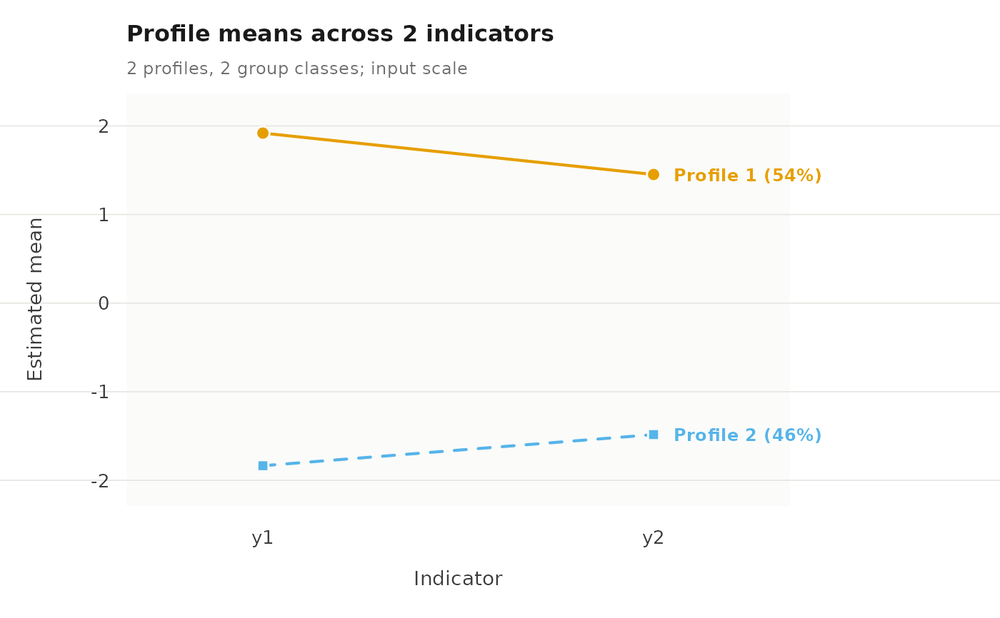

Draws the parts of a covariate fit that are still fixed quantities. The measurement model is one set of profile means as usual, and the assignments can be laid out in sequence order. Profile prevalence cannot be drawn this way: a covariate model has no single prevalence vector, because prevalence is a function of each unit's covariates, so asking for it is refused rather than answered with an average that no unit has.
Usage
# S3 method for class 'multilpa_covariates'
plot(
x,
what = c("profiles", "sequences", "entropy", "posteriors", "all"),
scale = c("raw", "standardized"),
labels = TRUE,
main = NULL,
subtitle = NULL,
palette = NULL,
symbols = NULL,
linetypes = NULL,
style = .multilpa_style(),
cell_labels = TRUE,
...
)Arguments
- x
A fitted
multilpa_covariatesmodel.- what
"profiles"(the default) draws the measurement model;"sequences"draws the assignments in course order and needs a fit made withtime =."entropy"and"posteriors"draw the two case-level classification diagnostics exactly asplot.multilpa()draws them: they read the individual posteriors, which a covariate fit has, and say nothing about prevalence, which it does not.- scale, labels, cell_labels, main, subtitle, palette, symbols, linetypes, style, ...
Passed through as in
plot.multilpa().
Examples
set.seed(5)
school <- rep(seq_len(16), each = 8)
high_class <- rep(rep(c(FALSE, TRUE), length.out = 16), each = 8)
x <- rnorm(128)
profile <- ifelse(
runif(128) < plogis(-1 + 2 * high_class + 0.8 * x), 2L, 1L
)
example_data <- data.frame(
school = school, x = x,
y1 = rnorm(128, ifelse(profile == 2L, 2, -2), 0.7),
y2 = rnorm(128, ifelse(profile == 2L, 1.5, -1.5), 0.7)
)
fit <- multilpa(example_data, c("y1", "y2"), "school", n_profiles = 2,
n_group_classes = 2, profile_covariates = "x",
n_starts = 2, seed = 1)
plot(fit)
